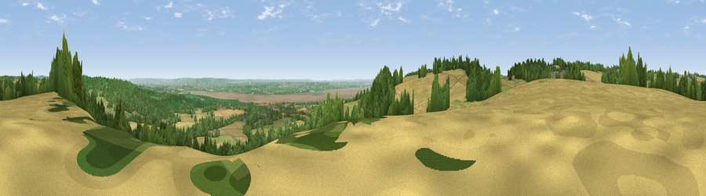

Viewpoint near Hewelsfield
#5813 in England · top 8% of its area beats it · near HewelsfieldThe view, rendered

A 360° render of this exact spot computed from the terrain model, tree cover and land cover — summer colours, afternoon light, calibrated against photographs of famous viewpoints. Real trees, hedges and buildings will differ in detail.
The panorama
Grey silhouette: terrain skyline in each direction (720 bearings, Earth curvature and refraction included). Dashed green: skyline with trees (+15 m) and buildings (+8 m) as obstacles. Blue strip: how far the ground is visible on each bearing.
Where the view opens
Wedge length = distance to the farthest visible ground on that bearing (vegetation-aware). Rings at 10, 25 and 50 km.
What fills the view
38% cropland · 30% woodland · 27% grassland · 4% water · 1% built-up
Angular shares of the visible panorama (visual magnitude), not map area. Landscape diversity 0.55 (0–1 Shannon).
Key numbers
More beautiful places nearby
The staircase of upgrades: each row has a higher view potential than everything closer. Driving times are estimates from straight-line distance, calibrated against real road routing — check an actual route before setting out.
| Place | Direction | Drive | Score |
|---|---|---|---|
| Viewpoint near Hewelsfield | SSW · 1 km | ~3 min | 70.7 |
| Viewpoint near Yorkley | NE · 8 km | ~16 min | 70.9 |
| Buck Stone | NNW · 11 km | ~20 min | 71.0 |
| Viewpoint near Littledean | NE · 15 km | ~27 min | 73.8 |
| Viewpoint near Ruardean | NNE · 16 km | ~28 min | 74.2 |
| Viewpoint near Stinchcombe | ESE · 16 km | ~29 min | 78.7 |
| Viewpoint near Stinchcombe | ESE · 16 km | ~29 min | 79.4 |
| Viewpoint near Stinchcombe | ESE · 16 km | ~29 min | 80.5 |
51.71591, -2.61386 · source: screening · position refined by local search. Computed location — check access rights before visiting.